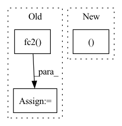

Pattern ID :1556

Before Change
def forward(self, state):
a = F.relu(self.fc1(state))
a = F.relu(self.fc2(a))
mu = self.mu_head(a)
mu = torch.clip(mu, MEAN_MIN, MEAN_MAX)
log_sigma = self.sigma_head(a)
log_sigma = torch.clip(log_sigma, LOG_STD_MIN, LOG_STD_MAX)
sigma = torch.exp(log_sigma)
After Change
a_dist, a_tanh_mode = self._get_outputs(state)
action = a_dist.rsample()
logp_pi = a_dist.log_prob(action).sum(axis=-1)
return action, logp_pi, a_tanh_mode
def get_log_density(self, state, action):
a_dist, _ = self._get_outputs(state)
action_clip = torch.clip(action, -1. + EPS, 1. - EPS)
In pattern: SUPERPATTERN
Frequency: 3
Non-data size: 3
Instances
Fragment ID: 4439959
Project Name: ryanxhr/dwbc
Commit Name: b3791e408af7125fde12cda1cdeaefbaa400aacc
Time: 2022-06-30
Author: xuhaoran8@jd.com
File Name: algos/DWBC.py
M Class Name: Actor
N Class Name: Actor
M Method Name: forward(2)
N Method Name: forward(2)
M Parent Class: nn.Module
N Parent Class: nn.Module
M File Name: algos/DWBC.py
N File Name: algos/DWBC.py
M Start Line: 35
M End Line: 52
N Start Line: 51
N End Line: 54
'>
Before Change
// The last hidden state is taken
out = torch.relu_(self.fc1(out[:,-1,:]))
out = self.dropout(out)
out = torch.sigmoid(self.fc2(out))
return out
After Change
packed_output, (hidden, cell) = self.lstm(packed_embedded)
//unpack sequence
out, out_lengths = nn.utils.rnn.pad_packed_sequence(packed_output, batch_first=True)
out = torch.relu_(out[:,-1,:])
out = self.dropout(out)
'>
Fragment ID: 4439982
Project Name: tsingz0/pfl-non-iid
Commit Name: c7dff7fb0575840727baa746eb08d9bd4c8ede22
Time: 2021-07-05
Author: 2719584131@qq.com
File Name: system/flcore/trainmodel/models.py
M Class Name: LSTMNetBase
N Class Name: LSTMNetBase
M Method Name: forward(2)
N Method Name: forward(2)
M Parent Class: nn.Module
N Parent Class: nn.Module
M File Name: system/flcore/trainmodel/models.py
N File Name: system/flcore/trainmodel/models.py
M Start Line: 441
M End Line: 459
N Start Line: 426
N End Line: 431
'>
Before Change
def forward(self, frame, target):
x = x.view(-1, 28 * 28)
x = F.relu(self.fc1(x))
x = F.relu(self.fc2(x))
x = self.fc3(x)
return x
After Change
def forward(self, frame, target):
x = self.resnet18(frame)
output, h_n = self.rnn(x.unsqueeze(1))
return torch.mean(output, dim=0)
'>
Fragment ID: 4439981
Project Name: anweshcr7/rhythmnet
Commit Name: be723666bfcfc6953d1182af0b44f044f6a72cf1
Time: 2021-01-10
Author: anwesh.marwade@beyondsports.nl
File Name: src/models/rhythmNet.py
M Class Name: RhythmNet
N Class Name: RhythmNet
M Method Name: forward(3)
N Method Name: forward(3)
M Parent Class: nn.Module
N Parent Class: nn.Module
M File Name: src/models/rhythmNet.py
N File Name: src/models/rhythmNet.py
M Start Line: 15
M End Line: 20
N Start Line: 24
N End Line: 28